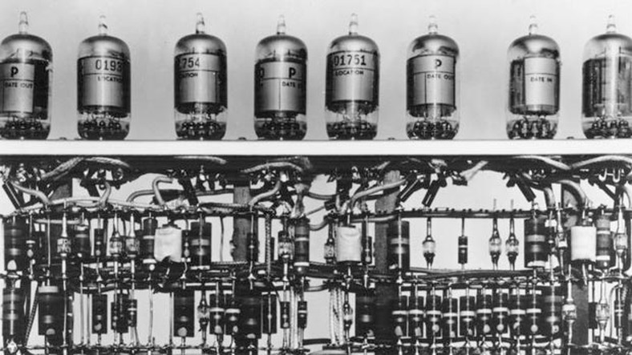
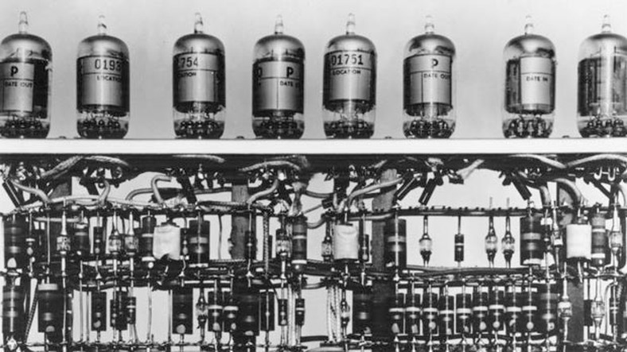

Olá meus colegas,professores e assinantes do meu canal.
Vamos dar continuidade no nosso episódio anterior, quando falávamos de Gottfried Leibniz e George Boole.
No episódio anterior, citamos a informação no computador.
Dependendo do circuito que é aplicado, da corrente elétrica é aberto ou fechado, ele vai te dar um tipo de informação, o que nós chamamos de código binário.
São dois estados aberto/fechado, ligado/desligado,corrente elétrica/não corrente elétrica, e que é representado pelos números zero e um.
Que o Leibniz tem a ver com isso?
Leibniz ele, apesar de não ter criado o código binário, ele aperfeiçoou o código binário, e criou um tratado sobre esse assunto.
Na época, ele não achou aplicabilidade para isso, mas ele desenvolveu todo o processo de cálculo e colocou num tratado.
George de Boole foi um matemático inglês.
Ele criou uma álgebra que leva o nome dele álgebra booleana e ele trabalha com três operadores dessa álgebra.
O NÃO (NOT), E (AND) e o OU (OR)e, através de Claude Shannon,
que era um estudante em 1937 no Instituto de Tecnologia
de Massachusetts, pegou a álgebra booleana e o código binário,
e aplicou isso aos circuitos eletrônicos.
Então os computadores passaram a ter essa relação, essa combinação de funcionamento.
Mas até chegar a esse modernismo todo que nós temos em termos de eletrônica, de computação, aconteceu muita coisa, e a história nos dá mais um personagem que mudou o curso da Segunda Guerra Mundial com o que a gente pode chamar de um protocomputador.
Inclusive essa história virou até um filme.
Se você quiser conhecer esse personagem, inscreva-se no meu canal.
Ative o sininho para receber as notificações dê um like e, no próximo episódio, nós vamos apresentar esse cientista para você.
Valeu, um abraço.
Canal do Youtube: Professor Luciano Cardozo Magalhães
Professor Luciano Cardozo Magalhães